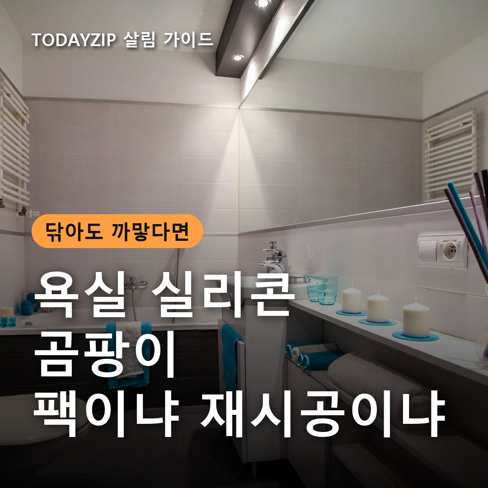
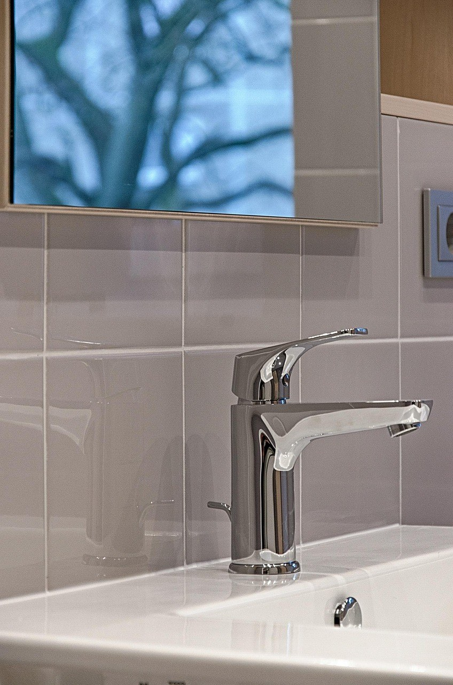
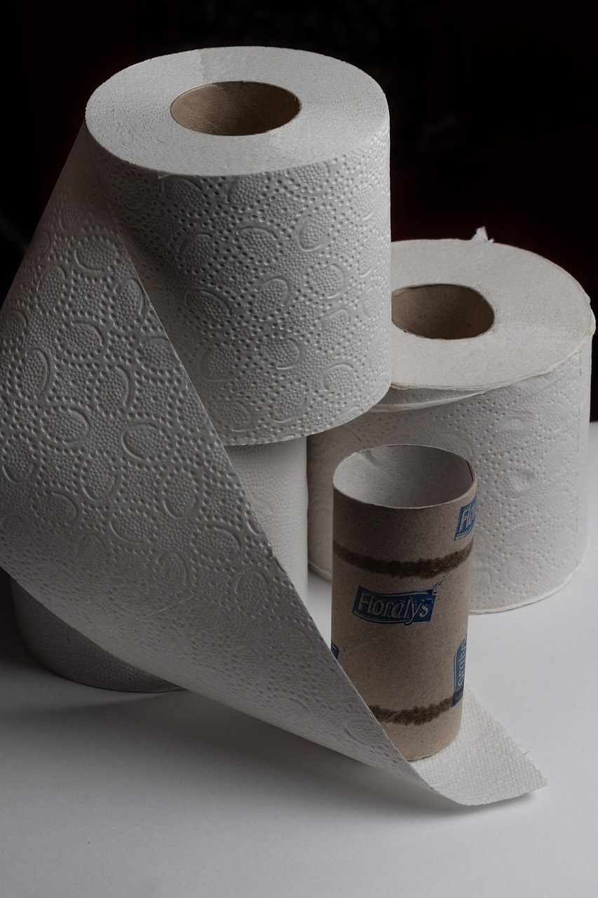
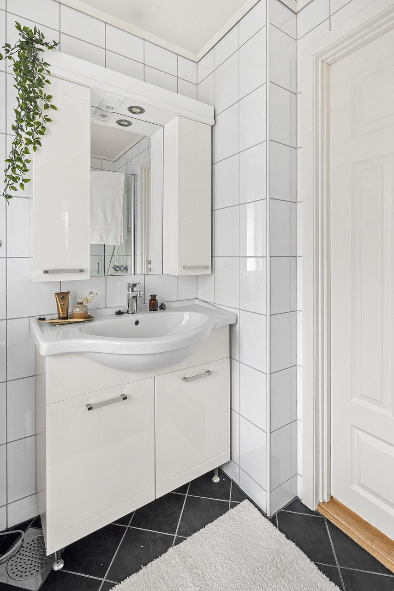

[사진 1: 썸네일]
분명히 솔로 박박 문질렀는데 욕실 실리콘의 까만 점이 그대로인가요? 세면대와 욕조 가장자리는 매일 물이 닿는 자리라, 청소를 게을리한 게 아니어도 곰팡이가 생기기 쉬워요.
그렇다고 무조건 뜯어낼 필요는 없어요. 욕실 실리콘 곰팡이는 표면에 있는지 속까지 번졌는지에 따라 답이 달라지거든요. 오늘은 락스 팩을 안전하게 하는 순서와 재시공을 판단하는 기준을 질문 순서대로 정리해 드릴게요.
[사진 2]
실리콘 틈과 표면에 곰팡이가 자리 잡았기 때문이에요. 뿌리는 세제는 세로로 난 이음새에서 금방 흘러내려 곰팡이에 오래 닿지 못해요. 그래서 겉만 젖었다가 그대로 씻겨 나가는 일이 많아요.
솔로 세게 문지르는 것도 답이 아니에요. 실리콘 표면에 흠집이 나면 물때와 습기가 더 잘 남을 수 있어요. 세제를 곰팡이에 오래 붙여 두는 방법이 먼저예요.
✍️ [내 경험 한두 줄: 우리 집 욕실에서 실리콘 곰팡이가 제일 먼저 생기는 곳은 어디인가요? (세면대/욕조/샤워부스)]
[사진 3]
핵심은 휴지나 키친타월로 세제가 머물 자리를 만들어 주는 거예요. 작업 전에 욕실 안의 산성 세제부터 밖으로 빼 두세요.
꼭 그렇지는 않아요. 방치 시간은 제품마다 다르니 라벨을 먼저 따르세요. 원액을 붓거나 밤새 두면 실리콘이 상할 수 있다는 사례도 있어서, 표시 시간을 넘기지 않는 편이 안전해요.
한 번에 안 지워지면 시간을 늘리기보다 충분히 헹구고 말린 뒤 다시 해 보세요. 세로 이음새처럼 흘러내리는 곳은 젤 타입 곰팡이 제거제가 더 편해요. 다만 젤 제품도 락스 성분인 경우가 많으니, 다른 세제와 섞지 않는 건 똑같아요.
[사진 4]
📷 [직접 찍은 사진 넣기: 욕실 실리콘의 곰팡이 부분을 가까이에서 찍은 모습]
두세 번 해 봐도 색이 그대로라면 곰팡이가 속까지 번졌을 수 있어요. 이럴 때는 표면 청소로 해결되지 않아 재시공을 생각할 때예요. 정해진 공식 기준은 없으니 아래 표로 상태를 보고 판단하세요.
✍️ [내 경험 한두 줄: 우리 집 욕실 실리콘은 지금 어떤 상태인가요? (까만 점/들뜸/갈라짐/깨끗함)]
| 실리콘 상태 | 추천 대처 |
|---|---|
| 까만 점이 표면에만 있음 | 락스 팩, 물기 관리 |
| 팩을 해도 색이 조금 남음 | 말린 뒤 한 번 더, 젤 타입 사용 |
| 반복해도 안쪽이 까맘 | 기존 실리콘 제거 후 재시공 |
| 들뜸, 갈라짐, 틈 벌어짐 | 재시공, 틈으로 물이 드는지 확인 |
| 아래층 누수, 벽이 계속 젖음 | 누수 점검 먼저 |
기존 실리콘 위에 덧바르지 말고 깨끗이 걷어낸 뒤 시공하세요. 곰팡이가 남은 자리에 덮으면 오래가기 어려워요. 자리를 완전히 말리고, 욕실용 방수·방곰팡이 표시가 있는 제품을 고르는 게 좋아요.
경화 시간은 제품마다 다르지만 보통 최소 하루는 물을 쓰지 말라고 안내해요. 시공 뒤에는 샤워 후 물기를 닦고 환기하는 습관이 재발을 줄여요. 욕실 실리콘 위에 샴푸 통을 올려 두지 않는 것도 도움이 돼요. 습기가 잘 안 빠지는 집이라면 제습기도 함께 살펴보세요.
Q. 식초나 구연산으로도 곰팡이를 지울 수 있나요?
A. 물때에는 쓰지만, 락스 작업과 함께 쓰면 위험해요. 어쩌다 쓰더라도 같은 날 번갈아 쓰지 말고, 욕실에서 함께 보관하지 마세요.
Q. 뜨거운 물로 헹궈도 되나요?
A. 찬물로 헹구는 게 좋아요. 뜨거운 물을 쓰면 락스 냄새가 더 올라올 수 있어요.
Q. 셀프 재시공이 어렵다면 어떻게 하나요?
A. 틈이 크거나 누수가 의심되면 전문가에게 맡기세요. 실리콘 교체만으로 누수가 해결된다고 장담할 수는 없어요.
까만 점이 표면에만 있다면 락스 팩부터, 반복해도 안쪽이 까맣거나 들떠 있다면 재시공을 생각해 보세요. 어느 쪽이든 욕실 실리콘을 오래 깨끗하게 쓰는 비결은 샤워 후 물기 닦기와 환기예요.
여러분 집 욕실에서는 곰팡이가 어디에 제일 먼저 생기나요? 댓글로 알려주세요.
인스타그램 @todayzip.info 에서 살림 꿀팁을 30초 영상으로도 볼 수 있어요.